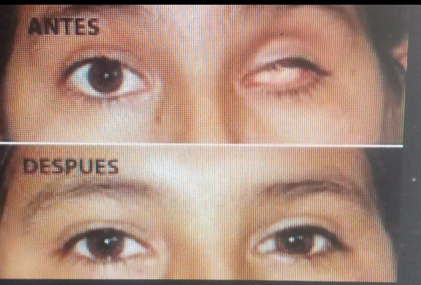
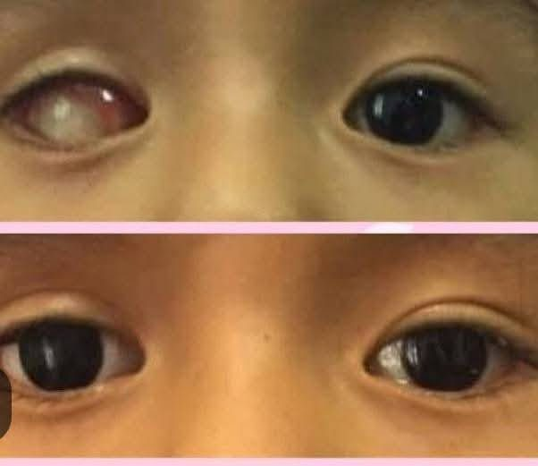
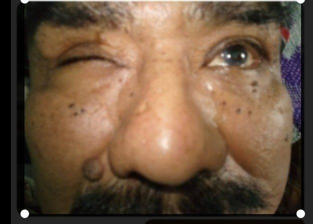
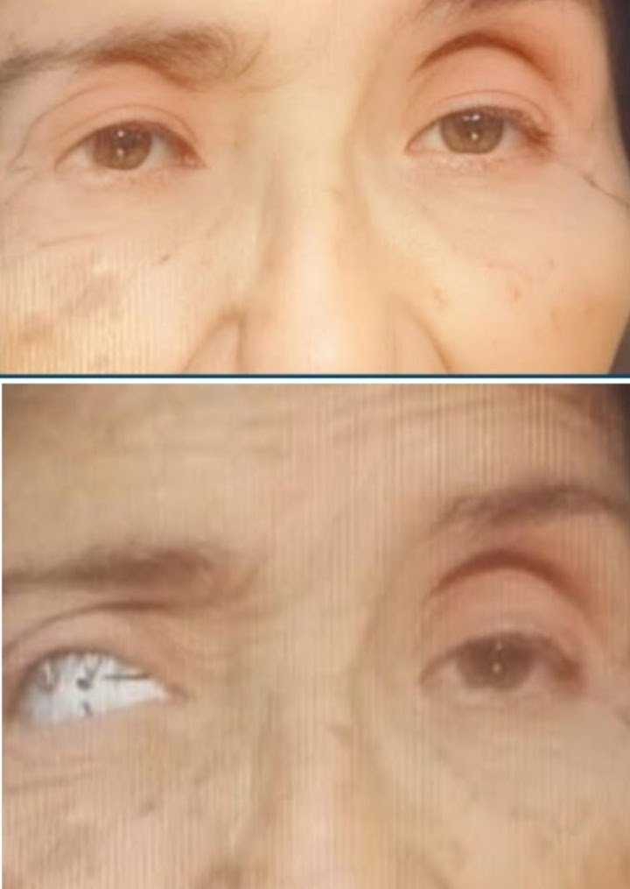
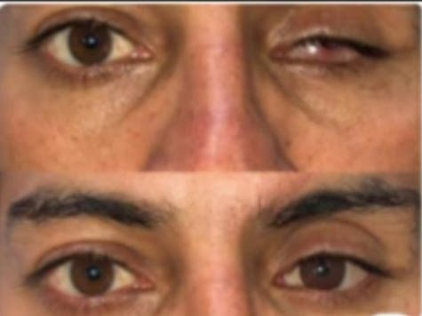
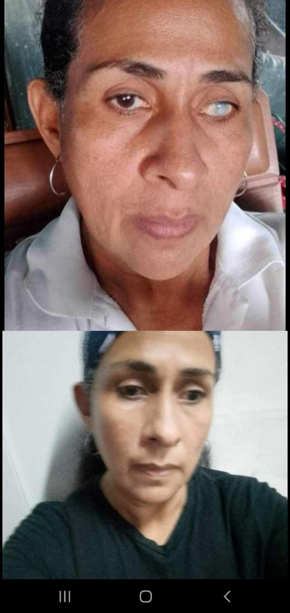
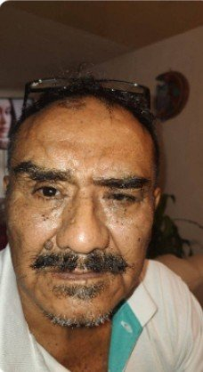
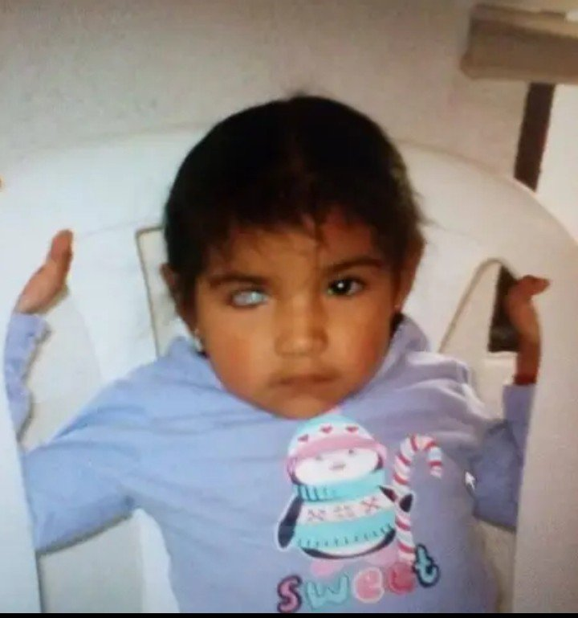
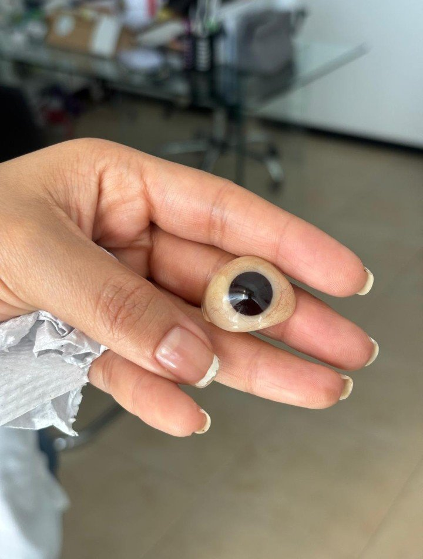
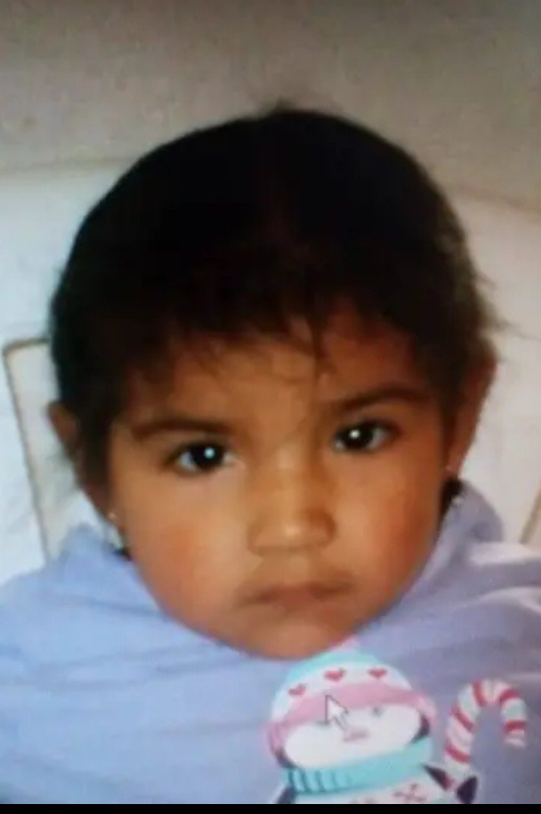

Nadie tiene que saberlo
Fabricamos y damos mantenimiento a prótesis oculares hechas a medida, para que se vean y se sientan lo más naturales posible.
Puebla, México · Cotización por WhatsApp
Una prótesis ocular es un ojo artificial hecho a medida que se coloca en la cavidad después de la pérdida de un ojo. No devuelve la vista: devuelve la apariencia natural.
Cada prótesis se elabora para igualar el color, la forma, el tamaño y el brillo del ojo sano, de manera que a simple vista pase desapercibida.
Está pensada para personas de todas las edades que perdieron un ojo por accidente, enfermedad o cirugía, y que desean recuperar su imagen y su confianza.
No hay dos prótesis iguales: cada una se fabrica sobre la medida de la cavidad de quien la va a usar, por eso la adaptación es personal.
Una prótesis bien adaptada se puede usar todos los días. En la valoración se explica cómo colocarla, retirarla y cuidarla.
Así es el proceso general para elaborar una prótesis ocular. Cada caso se valora de forma individual.
Se revisa la cavidad y el ojo sano para conocer las medidas, el color y las características que debe tener la prótesis.
Se toma el molde de la cavidad, que sirve como base para que la prótesis ajuste bien y se sienta cómoda.
La prótesis se elabora y se pinta a mano, buscando igualar el tono del iris, las venitas y el brillo del ojo sano.
Se prueba la prótesis puesta y se hacen los ajustes necesarios hasta que la adaptación y la apariencia queden bien.
Una prótesis ocular también necesita cuidados para que se conserve bien y siga siendo cómoda.
La limpieza regular, con los cuidados que se indican en la entrega, ayuda a mantener la prótesis en buen estado.
Con el uso, la superficie puede perder brillo. El pulido periódico le devuelve su aspecto liso y natural.
En las revisiones se verifica que la prótesis siga adaptando bien y se detecta a tiempo si necesita algún ajuste.
La cavidad puede cambiar con los años, sobre todo en niños en crecimiento. En esos casos la prótesis puede necesitar un ajuste o una nueva elaboración.
Ejemplos de resultados con prótesis oculares hechas a medida.



Cada persona es diferente: el resultado depende de cada caso y se valora de forma individual.
Conoce algunos de nuestros trabajos de prótesis oculares personalizadas, elaboradas con atención a los detalles y a la apariencia natural.







Cada prótesis se realiza de manera personalizada. Los resultados dependen de las características de cada persona.
Respuestas claras a las dudas más comunes.
No. La prótesis no devuelve la vista: su función es restaurar la apariencia natural del ojo. La persona sigue viendo con su ojo sano.
Sí. Cada prótesis se fabrica a medida para una sola persona, tomando en cuenta su cavidad y las características de su ojo sano.
La prótesis puede acompañar en parte el movimiento del ojo sano y de la cavidad. El grado de movimiento varía en cada persona y se explica en la valoración.
No. La prótesis se adapta sobre la cavidad, sin cirugía. La toma de medida y la adaptación se hacen con cuidado y de forma externa.
Se recomienda la revisión periódica. En cada caso se indica cuándo conviene volver, según la edad de la persona y el estado de la prótesis.
Por WhatsApp. Escríbanos contando su caso y con gusto le damos información y los pasos para la valoración.
¿Tiene dudas o quiere una cotización? Escríbanos por WhatsApp y le atendemos con gusto.
Puebla, México
Cotiza por WhatsApp 📲 Descargar la appWhatsApp: +52 222 684 5793